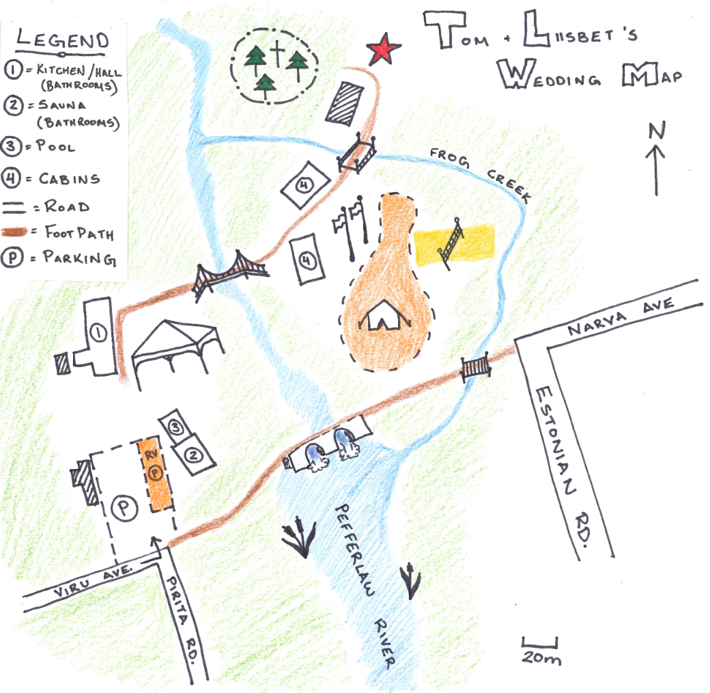

Find Your Way
Map of the property

We hope this map helps you find your way around the property! We will be referring to it throughout the website, so please keep it in mind.

Hand-drawn with love. The legend marks the kitchen/hall and sauna (both with bathrooms), pool, cabins, roads, footpaths, and parking. The red star marks the ceremony location — we'll walk there together from the reception tent beside building #1. The orange dotted areas mark the designated tenting area (tent icon) and RV parking ("P") — see Stay for details. Communal showers are located in the sauna.